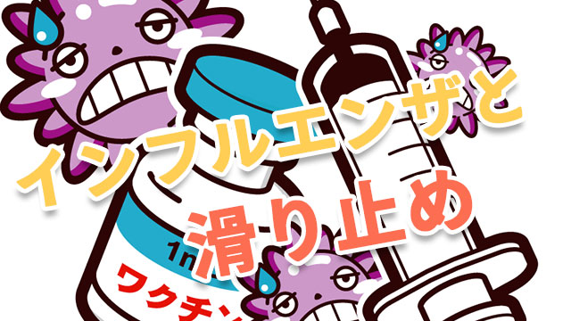

気がつけば2月、2017年の大学入試も私立本試験が始まり、そろそろ合格発表が行われるころです。例年であればこの時期、食事も喉を通らないほどピリピリするのですが、今年に関しては別の意味で何も食べられない日々を過ごしました。というのも、インフルエンザで一週間ほど倒れてしまったのです。
決して体が強い方ではない私ですが、これまでインフルエンザには無縁でした。それもあって、喉に違和感を覚えた初期のころもまさかインフルとは思いもせず、ただの風邪と高をくくっていました。それが、夜になって一気に熱が上がり、気がつけば39度。ふらふらしながら病院にたどり着き検査をするとインフル。不幸中の幸いは、まだウィルスがほとんど出ていない初期からちょうど公休日に当たっていたため、生徒たちに移した可能性が低いことでしょうか。
インフル確定後はタミフルをもらい、粛々と飲みました。すると1日もかからず熱が落ち、本当にしんどい時期は一瞬に過ぎました。心の底から医学の進歩に感謝した瞬間です。
寝床で高熱にうなされながら、ふと、いつも生徒に言っている言葉を思い出しました。「滑り止めはインフルで39度の熱が出ても受かるレベルを選びなさい」という台詞です。実際39度になってみると、意識はもうろうとして集中できません。体は鉛のように重く、この状態ではペンを動かすことすらキツいのです。この状況で数時間に及ぶ試験を受けるとなれば、自分の本来の実力よりも2～3段ほど簡単な問題でなければ対応できないでしょう。
高校入試を経験した生徒は通常、このような2～3段低い学校を受験することを嫌がる傾向にあります。いわく、「どうせ受かっても行かないし」「もっと上の学校に受かるはず」。しかし、これは高校入試の経験を引きずっている証拠です。高校入試では、多くの地域で私立「確約」のようなシステムがあります。これは、中学校の評定が基準を超えた場合、受験前の段階で合格を確約するというものです。また、高校入試の場合一般入試で受験する場合でも倍率は3～5倍程度、受験生は地元からしか来ません。
一方で大学入試には「確約」システムのようなお手軽な合格保証システムは存在しませんし、倍率も桁違いです。大学入試は高校入試と比べて明らかに「落とす試験」なのです。だからこそ、絶対に受かる学校を確保しようと思うと石橋をたたいて渡るしかないでしょう。
こう書くと、「○○大以下なら浪人するから」と言う生徒がいますが、この考え方も危険です。というのも、「全落ち」した場合と「滑り止めに受かった」場合では、浪人をするにしても精神的負荷が桁違いだからです。上述したように、大学入試は「落とす試験」。場合によっては受けては落ち、受けては落ち、とキツい結果になることがあります。生徒たちにとって不合格はただの書面上の話ではなく、自分を明確に否定されるという人生でも稀な経験となります。それが何度も続いたとき、全く気にせず黙々と勉強できる生徒はそう多くはありません。そんななかで、どこであれ「合格」したという経験は、書面以上の勇気と自己肯定感を与えてくれます。生徒はたとえ浪人するにしても、「おれ（わたし）は、△△大学には受かったのだから、それ以上の力があるはず」と確信して次の一年に迎えられるでしょう。そんなわけで、私は結構しつこく「滑り止め」にこだわります。
2月の中旬から下旬は、受験日と合格発表日が怒濤のごとくやってくる、大学入試のまさに本番です。生徒の皆さんは、体調に気をつけて全力を出し切ってほしいと思います。インフルエンザにはお気をつけて！